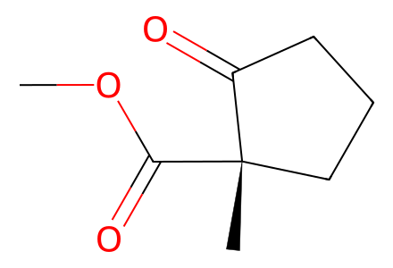
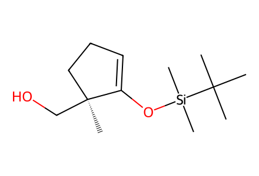
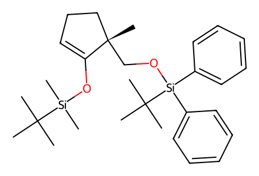
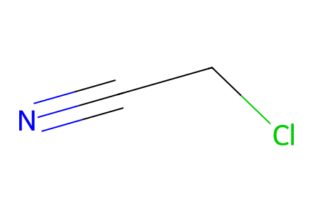
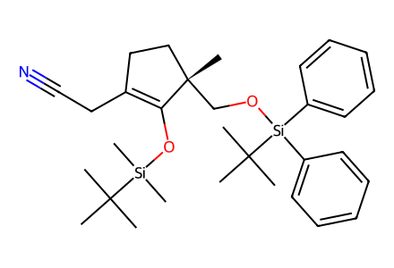
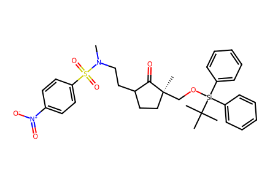
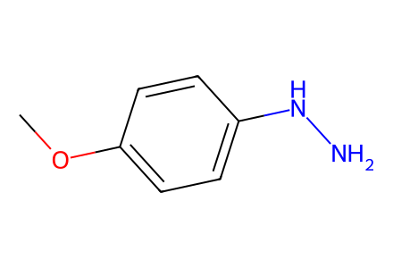
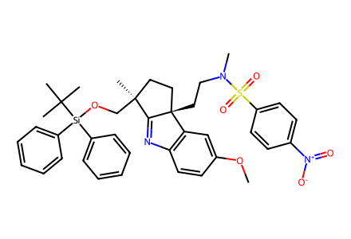
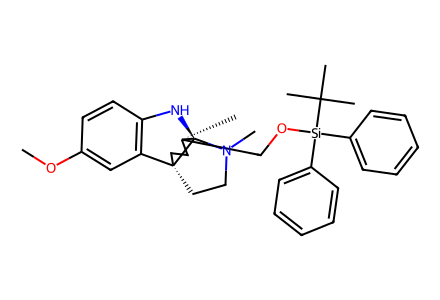
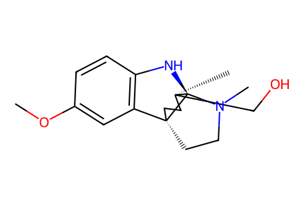

COC(=O)[C@@]1(C)CCCC1=OMain Fig5c chemical total synthesis. SI unavailable, correction impact unresolved; biosynthetic substrate scope and additional SI ester derivatizations not covered. Facts compiled deterministically; independent review pending.
完整 JSON · 逐步 CSV · 路线序列 · SDF · HRMS 核对
| 事件 | 分子连接 | 报告产率 | Canonical reaction SMILES |
|---|---|---|---|
| E01 | 37 → 38 | not reported | COC(=O)[C@@]1(C)CCCC1=O>>CC(C)(C)[Si](C)(C)OC1=CCC[C@]1(C)CO |
| E02 | 38 → 39 | 39: 78% | CC(C)(C)[Si](C)(C)OC1=CCC[C@]1(C)CO>>CC(C)(C)[Si](C)(C)OC1=CCC[C@]1(C)CO[Si](c1ccccc1)(c1ccccc1)C(C)(C)C |
| E03 | 39 + chloroacetonitrile → 41 | 41: 55% | CC(C)(C)[Si](C)(C)OC1=CCC[C@]1(C)CO[Si](c1ccccc1)(c1ccccc1)C(C)(C)C.N#CCCl>>CC(C)(C)[Si](C)(C)OC1=C(CC#N)CC[C@]1(C)CO[Si](c1ccccc1)(c1ccccc1)C(C)(C)C |
| E04 | 41 → 42 | not reported | CC(C)(C)[Si](C)(C)OC1=C(CC#N)CC[C@]1(C)CO[Si](c1ccccc1)(c1ccccc1)C(C)(C)C>>CN(CCC1CC[C@](C)(CO[Si](c2ccccc2)(c2ccccc2)C(C)(C)C)C1=O)S(=O)(=O)c1ccc([N+](=O)[O-])cc1 |
| E05 | 42 + 27 → 44 | 60% combined mixture yield | CN(CCC1CC[C@](C)(CO[Si](c2ccccc2)(c2ccccc2)C(C)(C)C)C1=O)S(=O)(=O)c1ccc([N+](=O)[O-])cc1.COc1ccc(NN)cc1>>COc1ccc2c(c1)[C@@]1(CCN(C)S(=O)(=O)c3ccc([N+](=O)[O-])cc3)CC[C@](C)(CO[Si](c3ccccc3)(c3ccccc3)C(C)(C)C)C1=N2 |
| E06 | 44 → 45 | 45: 61% | COc1ccc2c(c1)[C@@]1(CCN(C)S(=O)(=O)c3ccc([N+](=O)[O-])cc3)CC[C@](C)(CO[Si](c3ccccc3)(c3ccccc3)C(C)(C)C)C1=N2>>COc1ccc2c(c1)[C@]13CCN(C)[C@@]1(N2)[C@@](C)(CO[Si](c1ccccc1)(c1ccccc1)C(C)(C)C)CC3 |
| E07 | 45 → 4 | 4: 73% | COc1ccc2c(c1)[C@]13CCN(C)[C@@]1(N2)[C@@](C)(CO[Si](c1ccccc1)(c1ccccc1)C(C)(C)C)CC3>>COc1ccc2c(c1)[C@]13CCN(C)[C@@]1(N2)[C@@](C)(CO)CC3 |

COC(=O)[C@@]1(C)CCCC1=O
CC(C)(C)[Si](C)(C)OC1=CCC[C@]1(C)CO
CC(C)(C)[Si](C)(C)OC1=CCC[C@]1(C)CO[Si](c1ccccc1)(c1ccccc1)C(C)(C)C
N#CCCl
CC(C)(C)[Si](C)(C)OC1=C(CC#N)CC[C@]1(C)CO[Si](c1ccccc1)(c1ccccc1)C(C)(C)C
CN(CCC1CC[C@](C)(CO[Si](c2ccccc2)(c2ccccc2)C(C)(C)C)C1=O)S(=O)(=O)c1ccc([N+](=O)[O-])cc1
COc1ccc(NN)cc1
COc1ccc2c(c1)[C@@]1(CCN(C)S(=O)(=O)c3ccc([N+](=O)[O-])cc3)CC[C@](C)(CO[Si](c3ccccc3)(c3ccccc3)C(C)(C)C)C1=N2
COc1ccc2c(c1)[C@]13CCN(C)[C@@]1(N2)[C@@](C)(CO[Si](c1ccccc1)(c1ccccc1)C(C)(C)C)CC3
COc1ccc2c(c1)[C@]13CCN(C)[C@@]1(N2)[C@@](C)(CO)CC3